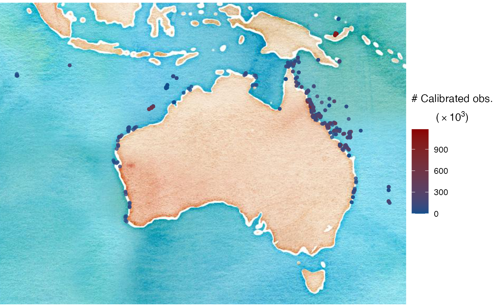
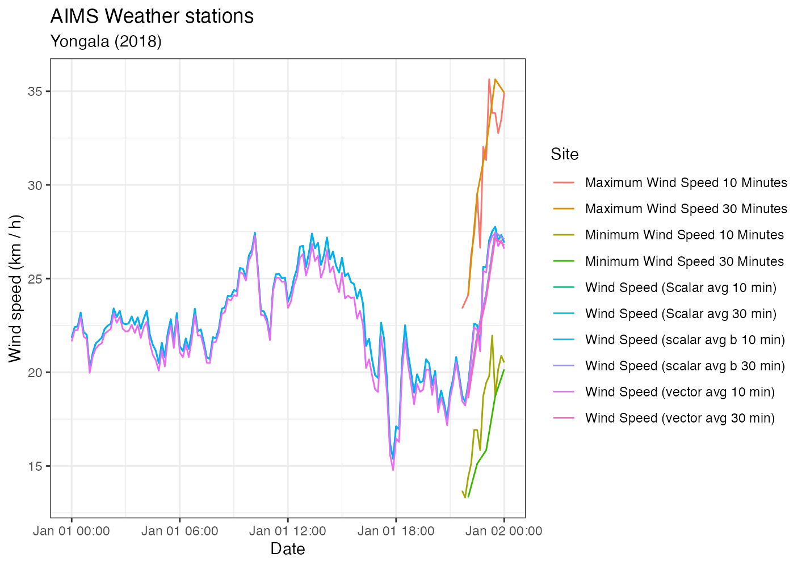

The very first thing to do is read the documentation on our README page. Make sure you have the package properly installed, and that your personal AIMS Data Platform API Key has been downloaded.
Once you have obtained your API Key, you can either place it permanently on your .Renviron file and set the object my_api_key to NULL in the chunk below, or if for some reason you are having difficulty placing your API Key permanently to the .Renviron, then just paste it to the object my_api_key below.
# set my_api_key to NULL if successfully placed in .Renviron
# paste your key where it says api-key-for-r-notebook
my_api_key <- "api-key-for-r-notebook"Then install dataaimsr following the documentation on our README page. Once that’s out of the way, we load the packages needed for this vignette:
dataaimsr contains two sets of monitoring data collected by AIMS since the 1980’s: the Weather Station dataset which contains encompasses data for different parameters (e.g. Air Temperature, Air Pressure, Chlorophyll, and many others); and the Sea Water Temperature Loggers dataset which contains records of (you guessed it!) sea water temperature at different sites and water depths.
The datasets are very large, and as such they are not locally stored. They are instead downloaded via the API and unique DOI identifier (just hover over the data links above to see the actual DOI codes). The datasets are structured by sites, series and parameters. A series is a continuing time-series, i.e. a collection of deployments measuring the same parameter (e.g. Air Temperature, Air Pressure, Chlorophyll) at the same site.
For the Sea Water Temperature Loggers dataset, series is synonymous with the variable called subsite. For the Weather Station dataset, it is the combination of subsite and parameter.
This vignette gives an overview of how one would go about discovering the overall information contained in the datasets. For dataset-specific vignettes, see our other vignette pages.
The AIMS Data Platform API points to the full metadata of each dataset. We are currently working on ways to facilitate the visualisation of both datasets and their multiple features directly through the R package. At the moment though it is only possible to visualise summary information for the Sea Water Temperature Loggers dataset. A similar feature for the Weather Station dataset will be implemented in the near future (likely early 2021)—so for now, please refer to the online metadata to discover from where (and when) you can download data.
The first step would be to visualise the dataset. Let’s do this by mapping all available sites. First we need to store the DOI for the target dataset—this is done via the function aims_data_doi. We can then download the summary information for the Sea Water Temperature Loggers dataset using the main function called aims_data:
# see ?aims_data_doi for argument names
ssts_doi <- aims_data_doi("temp_loggers")
sdata <- aims_data(ssts_doi,
api_key = my_api_key,
summary = "summary-by-series")
head(sdata$data)## site_id site subsite_id subsite series_id series
## 1 1 Agincourt Reef Number 3 2687 AG3FL1 2687 AG3FL1
## 2 1 Agincourt Reef Number 3 14276 AG3SL1old 14276 AG3SL1old
## 3 3 Cleveland Bay 3007 CLEVAWSSL1 3007 CLEVAWSSL1
## 4 3 Cleveland Bay 3069 CLEVAWSFL1 3069 CLEVAWSFL1
## 5 4 Davies Reef 2629 DAVFL1 2629 DAVFL1
## 6 4 Davies Reef 2630 DAVSL1 2630 DAVSL1
## parameter parameter_id from_date thru_date lat lon
## 1 Water Temperature 1 1996-03-30 2008-12-11 -15.9903 145.8212
## 2 Water Temperature 1 1996-03-30 2011-07-21 -15.9905 145.8213
## 3 Water Temperature 1 2004-05-13 2008-05-03 -19.1557 146.8813
## 4 Water Temperature 1 2005-09-15 2005-12-22 -19.1557 146.8813
## 5 Water Temperature 1 1997-08-26 2019-06-10 -18.8065 147.6688
## 6 Water Temperature 1 1996-05-02 2017-05-07 -18.8060 147.6686
## uncal_obs cal_obs qc_obs
## 1 23130 110480 110480
## 2 114450 216794 216794
## 3 11951 53231 53231
## 4 0 4656 4656
## 5 437544 566585 566585
## 6 369317 495663 495608The summary argument here is key. It should only be flagged when the user wants an overview of the available data. Again, this currently implemented for the Sea Water Temperature Loggers dataset. One can visualise summary-by-series or summary-by-deployment.
Notice that sdata$data contains a lot of information, most of which is related to site / series / parameter ID. Each row corresponds to a unique series, and a certain site may contain multiple series; in such cases, series generally differ from one another by depth. The columns from_date and thru_date are probably one of the most valuable pieces of information. They provide the user with the window of data collection for a particular series, which is probably crucial to decide whether that particular series is of relevance to the specific question in hand.
Also note that there are three columns containing the total number of observations in a series: uncal_obs, cal_obs and qc_obs, which respectively stand for uncalibrated, calibrated, and quality-controlled observations. Calibrated and quality-controlled are generally the same, and currently there is no public information on AIMS quality-control methods and algorithms. However, if this is crucial information to you, please reach out to the Data Manager from the AIMS Data Centre. So let’s go ahead and plot these data on a map of Australia, while colouring based on the total amount of calibrated observations:
sdata$data <- sdata$data %>%
dplyr::mutate(cols = cal_obs * 1e-3) %>%
tidyr::drop_na(lon, lat)
lab <- expression(atop("# Calibrated obs.",
paste("(" %*% 10^3, ")")))
ozmap <- ggmap::get_stamenmap(bbox = c(left = 94, bottom = -45,
right = 162, top = 0),
zoom = 4, maptype = "watercolor")
ggmap::ggmap(ozmap) +
theme_void() +
geom_point(data = sdata$data,
mapping = aes(x = lon, y = lat,
colour = cols,
fill = cols),
shape = 16, alpha = 0.8) +
scale_colour_gradient(name = lab,
low = "dodgerblue4",
high = "darkred") +
scale_fill_gradient(name = lab,
low = "dodgerblue4",
high = "darkred")
In the case of the Weather Station dataset, knowing what sites are out there is a bit tricky. However, currently we have a convenience function called filter_values which allows one to query what sites, series and parameters are available for both datasets:
weather_doi <- aims_data_doi("weather")
filter_values(weather_doi, filter_name = "series") %>%
head()## series_id
## 1 104918
## 2 100686
## 3 266
## 4 2639
## 5 10243
## 6 258
## series_name
## 1 Myrmidon Reef Weather Station Wind Speed (scalar avg b 10 min)
## 2 Saibai Island Weather Station Hail Duration
## 3 Orpheus Island Relay Pole 3 Wind Direction (Vector Average 30 Minutes)
## 4 Hardy Reef Weather Station Wind Direction (Vector Standard 10 Minutes)
## 5 Raine Island Weather Station Air Temperature
## 6 Orpheus Island Relay Pole 3 Wind Speed (Scalar avg 10 min)The downside is that one cannot know what time window is available for each one of those, nor how they are nested (i.e. series / parameter / site). In a way though the series name generally gives that information anyway (see code output above). If knowing the available observation window is absolutely crucial, then as mentioned above the user should refer to the online metadata.
Now that we know how to explore the datasets and what data is out there, we finish this vignette by showing an example of how one would go about downloading actual data.
We say slices of datasets because AIMS monitoring datasets are of very high temporal resolution and if one tries to download the entire thing it might take hours if not days. Generally that is why we download slices of data at a time, and for that we need filters.
Filters are the last important information the user needs to know to master the navigation and download of AIMS monitoring datasets. Each dataset can filtered by attributes which can be exposed with the function expose_attributes:
expose_attributes(weather_doi)## $summary
## [1] NA
##
## $filters
## [1] "site-name" "series" "size" "parameter"
## [5] "min-latitude" "max-latitude" "min-longitude" "max-longitude"
## [9] "from-date" "thru-date" "version" "cursor"
expose_attributes(ssts_doi)## $summary
## [1] "summary-by-series" "summary-by-deployment"
##
## $filters
## [1] "site" "subsite" "series" "size" "parameter" "min_lat"
## [7] "max_lat" "min_lon" "max_lon" "from_date" "thru_date" "version"
## [13] "cursor"Notice that they are not (yet!) consistent across datasets, so pay attention to the nuances. The help file (see ?expose_attributes) contains the details about what each filter targets. So, having an understanding of the summaries and what filters are available provide the user with a great head start.
Downloading the data is achieved using the same aims_data function, however now we do not specify a summary argument, and instead implement filters. For example, let’s say we want to download all the data collected at the Yongala for a specific time window:
wdata_a <- aims_data(weather_doi,
api_key = my_api_key,
filters = list("site-name" = "Yongala",
"from-date" = "2018-01-01",
"thru-date" = "2018-01-02"))$data
head(wdata_a)## deployment_id site_name location_name depth latitude longitude
## 1 472564 Yongala Yongala NRS Buoy NA -19.30372 147.6205
## 2 472564 Yongala Yongala NRS Buoy NA -19.30372 147.6205
## 3 472564 Yongala Yongala NRS Buoy NA -19.30372 147.6205
## 4 472564 Yongala Yongala NRS Buoy NA -19.30372 147.6205
## 5 472564 Yongala Yongala NRS Buoy NA -19.30372 147.6205
## 6 472564 Yongala Yongala NRS Buoy NA -19.30372 147.6205
## parameter serial_num data_id time
## 1 Wind Speed (Scalar avg 10 min) E0810017 1002524661 2018-01-01 00:00:00
## 2 Wind Speed (Scalar avg 10 min) E0810017 1002525035 2018-01-01 00:10:00
## 3 Wind Speed (Scalar avg 10 min) E0810017 1002525436 2018-01-01 00:20:00
## 4 Wind Speed (Scalar avg 10 min) E0810017 1002525892 2018-01-01 00:30:00
## 5 Wind Speed (Scalar avg 10 min) E0810017 1002526278 2018-01-01 00:40:00
## 6 Wind Speed (Scalar avg 10 min) E0810017 1002526524 2018-01-01 00:50:00
## raw_value qc_value series_id series_name
## 1 21.8412 21.8412 4103 Yongala NRS Buoy Wind Speed (Scalar avg 10 min)
## 2 22.4100 22.4100 4103 Yongala NRS Buoy Wind Speed (Scalar avg 10 min)
## 3 22.4496 22.4496 4103 Yongala NRS Buoy Wind Speed (Scalar avg 10 min)
## 4 23.1876 23.1876 4103 Yongala NRS Buoy Wind Speed (Scalar avg 10 min)
## 5 22.1364 22.1364 4103 Yongala NRS Buoy Wind Speed (Scalar avg 10 min)
## 6 22.0104 22.0104 4103 Yongala NRS Buoy Wind Speed (Scalar avg 10 min)We see that there a bunch of parameters available for this site at the specified time:
unique(wdata_a$parameter)## [1] "Wind Speed (Scalar avg 10 min)"
## [2] "Wind Direction (Scalar Average 10 Minutes)"
## [3] "Wind Direction (Scalar Standard 10 Minutes)"
## [4] "Wind Speed (scalar avg b 10 min) "
## [5] "Wind Speed (vector avg 10 min)"
## [6] "Wind Direction (Vector Average 10 Minutes)"
## [7] "Wind Direction (Vector Standard 10 Minutes)"
## [8] "Maximum Wind Speed 10 Minutes"
## [9] "Minimum Wind Speed 10 Minutes"
## [10] "Air Temperature"
## [11] "Humidity"
## [12] "Air Pressure"
## [13] "Rain Duration"
## [14] "Rain Intensity"
## [15] "Wind Speed (Scalar avg 30 min)"
## [16] "Wind Direction (Scalar Average 30 Minutes)"
## [17] "Wind Direction (Scalar Standard 30 Minutes)"
## [18] "Wind Speed (scalar avg b 30 min)"
## [19] "Wind Speed (vector avg 30 min)"
## [20] "Wind Direction (Vector Average 30 Minutes)"
## [21] "Wind Direction (Vector Standard 30 Minutes)"
## [22] "Maximum Wind Speed 30 Minutes"
## [23] "Minimum Wind Speed 30 Minutes"
## [24] "Rain Accumulation"
## [25] "Water Temperature"
## [26] "Water Pressure"
## [27] "Salinity"
## [28] "Chlorophyll"
## [29] "Turbidity"
## [30] "Depth"
## [31] "Dissolved Oxygen (mole)"And the actual measurements are either raw or quality-controlled. Let’s plot wind speed data as an example
wdata_a %>%
dplyr::filter(grepl("Wind Speed", parameter)) %>%
ggplot(data = .) +
geom_line(aes(x = time, y = qc_value, colour = parameter)) +
labs(x = "Date",
y = "Wind speed (km / h)",
colour = "Site",
title = "AIMS Weather stations",
subtitle = "Yongala (2018)") +
theme_bw()
We could refine even further by including a time window to download the data:
wdata_b <- aims_data(weather_doi,
api_key = my_api_key,
filters = list("series" = 64,
"from-date" = "1991-10-18T06:00:00",
"thru-date" = "1991-10-18T12:00:00"))$data
range(wdata_b$time)## [1] "1991-10-18 06:00:00 UTC" "1991-10-18 12:00:00 UTC"See our other vignette pages for further dataset-specific explorations.